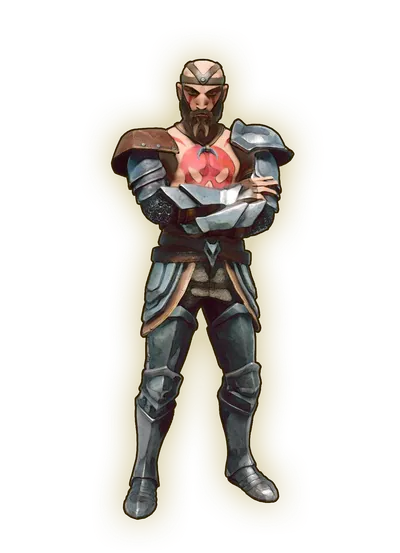

Ratcatcher is the third primary quest where you can learn about fighting and cooking.
Overview
Location
Walkthrough


Go and talk to Vannaka, who is directly north-east of Doric, south of the windmill. He will tell you that you need food to be able to keep fighting, so you need to get some rat meat.
Go to the north up to the windmill, and kill 4 giant rats to get 4 raw rat meats. Gather 4 ash logs and 4 stones to build a campfire, and some more logs to fuel it. Cook the meat on the campfire to get 2 rat roasts.
Bring the rat roasts back to Vannaka. He will send you to Zanik to learn about magic, starting Rune Mysteries.
Congratulations. Quest complete!
Reward
Required to Complete
This quest is required to complete the following quest(s):
This guide is the wiki's Ratcatcher article, by its editors, reformatted for this site. Licensed CC BY-NC-SA 3.0.